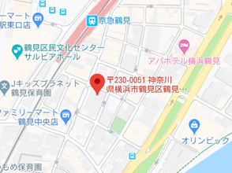

本社
-
本社
〒230-0051
神奈川県横浜市鶴見区鶴見中央4-14-14TEL 045-504-6811
FAX 045-504-7575現社員・元社員の方、クレームは
こちらへお問い合わせください。
-
求職者専用フリーダイアル
TEL 0120-790-760
（受付時間 9:00～21:00）
東北
-
札幌事務所
〒060-0001
北海道札幌市中央区北1条西3-3-31
古久根ビル7FTEL 0120-433-644
FAX 011-210-0222 -
札幌事業所千歳面接会場
〒066-0062
北海道千歳市千代田町4-2-1
道銀千歳ビル2FTEL 0120-964-861
FAX 0123-40-8057 -
北上事業所八戸面接会場
〒039-1102
青森県八戸市一番町1丁目2-22
馬渡店舗 2階D号室TEL 0120-999-253
FAX 0178-70-1603 -
北上事業所
〒024-0061
岩手県北上市大通り2-3-8
岩手地所北上駅前ビル4FTEL 0120-0232-00
FAX 0197-65-0235 -
秋田事業所
〒010-0003
秋田県秋田市東通3-1-6
プラザワイズ101号室TEL 0120-0145-33
FAX 018-884-0147 -
仙台事業所
〒980-0021
宮城県仙台市青葉区中央3-6-22
駅前のぞみビル4FTEL 0120-01-3951
FAX 022-268-4672 -
仙台事業所古川面接会場
〒989-6162
宮城県大崎市古川駅前大通り1-3-8
エンドービル3FTEL 0120-975-685
FAX 0229-21-7089 -
郡山事業所
〒963-8005
福島県郡山市清水台1-6-21
山相郡山ビル4FTEL 0120-39-0161
FAX 024-939-7755 -
山形事業所
〒990-2413
山形県山形市南原町3丁目9-40
伊藤マンション1FTEL 0120-25-9765
FAX 023-625-9767
関東・甲信越
-
採用登録センター
〒230-0051
神奈川県横浜市鶴見区鶴見中央4-10-1 1FTEL 0120-982-405
FAX 045-508-3614 -
鶴見事業所
〒230-0051
神奈川県横浜市鶴見区鶴見中央4-10-1 2FTEL 0120-1691-00
FAX 045-502-2682 -
宇都宮事業所小山面接会場
〒323-0022
栃木県小山市駅東通り2-19-3
岩崎ビル201号室TEL 0120-76-0351
FAX 0285-24-5722 -
那須事業所
〒329-2727
栃木県那須塩原市永田町2-9
齋藤殖産第3ビル102号TEL 0120-227-971
FAX 0287-36-2506 -
鶴見事業所松本面接会場
〒390-0817
長野県松本市巾上13-4
巾上ビル202号室TEL 0120-458-051
FAX 0263-39-7370
中部
-
名古屋事業所
〒453-0014
愛知県名古屋市中村区則武1-19-13
KSビル2階TEL 0120-6841-77
FAX 052-451-7860 -
名古屋事業所刈谷面接会場
〒448-0028
愛知県刈谷市桜町1-10
セントラルビル2階B号室TEL 0120-941-692
FAX 0566-62-8857 -
四日市事業所
〒510-0067
三重県四日市市浜田町12-18
アーク四日市ビル2F 201号室TEL 0120-3862-00
FAX 059-353-3863 -
掛川事業所
〒436-0077
静岡県掛川市駅前1-3
駅前第一ビル2FTEL 0120-392-251
FAX 0537-23-6658
中部
-
大阪事業所
〒530-0012
大阪府大阪市北区芝田2-6-30
梅田清和ビルディング6FTEL 0120-576-690
FAX 06-6375-1828 -
滋賀事業所
〒523-0893
滋賀県近江八幡市桜宮町289番地
フジビル3FTEL 0120-06-1767
FAX 0748-31-2817 -
滋賀事業所草津面接会場
〒525-0037
滋賀県草津市西大路町2-2
西田ビル3F A号室TEL 0120-989-473
FAX 077-561-5272 -
大阪事業所広島面接会場
〒732-0056
広島県広島市東区上大須賀町1-16
交通会館ビル6FTEL 0120-080-280
FAX 082-568-8003
九州
-
福岡事業所
〒812-0013
福岡県福岡市博多区博多駅東2-2-2
博多東ハニービル501A号室TEL 0120-092-436
FAX 092-436-6500 -
福岡事業所久留米面接会場
〒830-0032
福岡県久留米市東町36-8
ステーションプラザ久留米ビル503号室TEL 0120-997-452
FAX 0942-46-6321 -
福岡事業所小倉面接会場
〒802-0003
福岡県北九州市小倉北区米町1-1-21
大分銀行・明治安田生命ビル7FTEL 0120-990-125
FAX 093-513-0288 -
熊本事業所
〒860-0806
熊本県熊本市中央区花畑町4-1
太陽生命熊本第2ビル8FTEL 0120-080-280
FAX 082-568-8003 -
中津事業所
〒871-0058
大分県中津市豊田町9-8
平和ビル201号室TEL 0120-451-302
FAX 0979-24-6122 -
沖縄事業所
〒901-2204
沖縄県宜野湾市上原1-8-2
OSビル202TEL 0120-981-803
FAX 098-896-0756